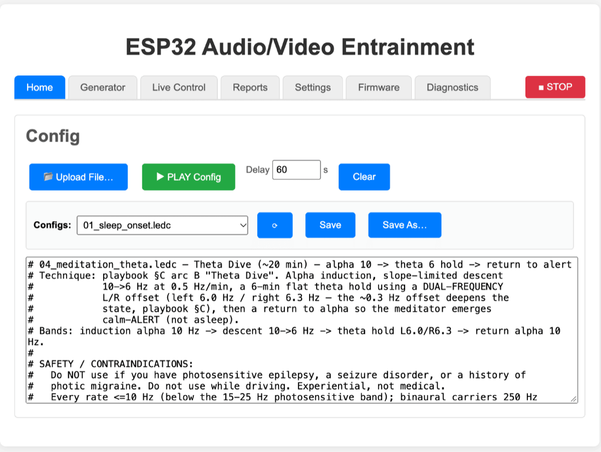
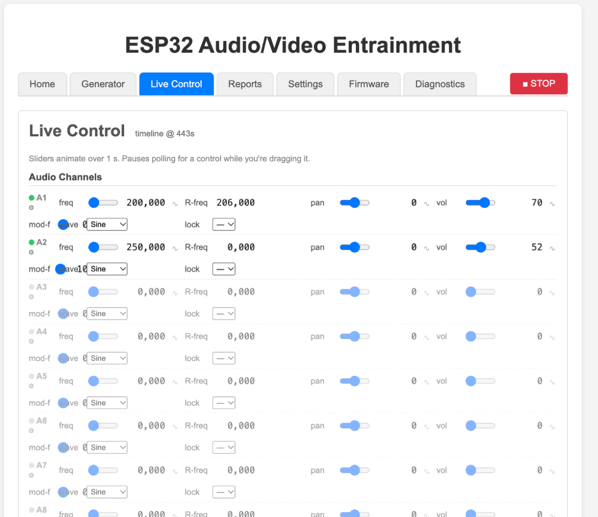

The main screen and live controls
What you are trying to achieve: understand what you are looking at, and be able to change the experience while it is happening — knowing what each control does to what you hear and see, not just which number it edits.
The layout
The page is titled ESP32 Audio/Video Entrainment and has a single row of tabs across the top, plus one button that is not a tab.

.ledc text of whatever is loaded.| Tab | What it is for |
|---|---|
| Home | Load a session and play it. The text box shows the actual timeline that will run, so you can read or tweak it before pressing play. |
| Generator | The session editor: Text, Table, Lanes, Wizard and Community views over one shared model. Covered in the session developer section. |
| Live Control | Direct sliders for every audio and LED channel. The subject of most of this page. |
| Reports | Session reports with your own title and notes, plus the device log and browser log captured during the session. |
| Settings | Device configuration — see Settings. |
| Firmware | Over-the-air updates — see Firmware update. |
| Diagnostics | Device health, the live log tail, log levels and crash dumps, with no USB cable needed. |
| ■ STOP | Not a tab — a red button pinned to the tab row, titled "Stop all audio + LED". Visible from every tab, always one click away. |
The selected tab is reflected in the page's URL, so reload and the browser's back and forward buttons behave the way you expect. The Generator tab widens the page; the others keep a narrow reading column.
The Live Control tab
Live Control talks straight to the running engine. It is the most interesting screen on the device and the easiest one to misread, because it is a mixing desk, not a form you submit — every drag takes effect immediately.

Three things to know before you touch anything:
- Changes glide, they do not jump. The header says "Sliders animate over 1 s." Every change you make is sent as a one-second ramp from the current value to the new one, so you never get a click or a visual jolt from dragging a slider.
- The sliders show you the device, not your last input. The page reads the engine's real state about once a second and moves the sliders to match. That is why they travel on their own while a session plays — you are watching the timeline. While you are dragging a control it stops updating that one control, and resumes about a second after you let go.
- Every row has a dot and a value box. The dot next to
A1orL1lights when that channel is actually active; inactive rows are dimmed. Next to each slider is an editable number box, for when you want 50.243 Hz rather than whatever the slider lands on.
The status line beside the Live Control heading reads
idle when nothing is running, or
timeline @ 143s — how far into the loaded session the device
currently is.
Audio Channels (A1–A8)
Eight independent tone generators. Each one is its own oscillator; they are summed to the output. A channel with vol at 0 makes no sound.
| Control | Range | What it does to the experience |
|---|---|---|
| freq | 0–20000 Hz | The pitch of the tone — in binaural terms, the tone your left ear hears. This is the carrier, not the entrainment rate: it is what the session sounds like, not what it is doing. Low hundreds of Hz is the usual home for this. Setting it to 0 stops the channel. |
| R-freq | 0, or 1–20000 Hz | The right ear's pitch, and the one control that turns a plain tone
into a binaural beat. Leave it at 0 and both ears get
the same tone (mono). Set it a little away from freq
and you perceive a pulsing at the difference — freq 200
against R-freq 210 is a 10 Hz beat that exists only
in your head, and only over headphones. Number box only, applied
instantly. |
| pan | −100 … +100 | Where the tone sits between your ears. −100 is hard left, 0 centre, +100 hard right. Useful for separating layers so a busy session does not turn to mud; also the control a slow sweep rides on to make a sound seem to rotate around you. |
| vol | 0–100 % | This channel's level in the mix. This is the fader you want for "make the tones quieter than the background music", not the device's master volume (that lives in Settings). |
| mod-f | 0–40 Hz | Turns the tone on and off rhythmically — an isochronic tone. 0 means a continuous, unbroken tone. Any value above 0 is an audible pulse rate: this is the entrainment rate, and unlike a binaural beat it works through loudspeakers and is far more obvious. 10 Hz sounds like a fast flutter; 2 Hz like a slow throb. |
| wave | Sine, Square, Triangle, Saw, EEG | The tone's timbre. Sine is smooth and the default. Square and Saw are buzzy and rich in harmonics — more present, more fatiguing over half an hour. EEG is a non-geometric single-cycle shape modelled on a recorded brainwave contour rather than a mathematical waveform. |
| lock | — or another channel | Makes this channel follow another one's frequency. The gap between
them at the moment you lock is preserved, so locking
A2 to A1 when they are 10 Hz apart keeps
them 10 Hz apart as you drag A1 — you move a whole
harmonic stack with one slider. Pan, volume and modulation stay
independent. The follower's frequency controls grey out, and the
setting is remembered in your browser, not on the device. Circular
locks are refused. |
The ∿ icon: put a control on an LFO
Each of freq, pan, vol and mod-f has a small ∿ beside it. Clicking it opens Modulation for that one field, where you set a Type (None, Triangle, Sine, Saw up, Saw down, Square), a From and To value, and a Period (ms).
The effect is that the control stops being a number and becomes a slow cycle between two numbers. A sine modulation on vol from 40 to 70 over 10000 ms is a gentle breathing swell; the same on pan from −80 to +80 makes the tone drift back and forth across your head. Setting Type to None (off) clears the modulation and the control goes back to holding still. The ∿ icon lights up while a field is being modulated — including when the running session, not you, put it there.
The ⚙ icon: pulse shaping
At the left of each audio row, ⚙ opens Pulse — how the isochronic gate is shaped, as opposed to how fast it runs.
| Field | Effect |
|---|---|
| Envelope | The shape of each pulse: Square (abrupt, the most assertive), Sine and Triangle (smooth, easier over long sessions), Trapezoid (a controlled rise, a flat hold and a fall), or Tremolo (the older bipolar-sine behaviour). |
| Duty % | How much of each pulse period the tone is on. Lower duty means more silence between pulses and a sharper, more percussive feel. |
| Attack ms | How long each pulse takes to come up. A few milliseconds removes the click from a square gate. |
| Depth % | How far down the gate pulls between pulses. 100 % is a true on/off isochronic tone; a low depth is a subtle wobble on a tone that never actually stops — much less intrusive if the pulsing itself is distracting. |
| Phase ° | Where in its cycle this channel's gate sits. Two channels at the same rate but 180° apart alternate instead of pulsing together. |
| Jitter Hz / Jitter period ms | Slowly wanders the beat frequency by up to the given amount, over the given period, so the rhythm never becomes perfectly predictable — intended to slow down habituation. This one is device-wide: the dialog says so, and it affects every audio channel, not just the one you opened. |
Noise (Audio Ch 9)
A dedicated noise generator, separate from the eight tone channels. type chooses Off, White, Pink or Brown, and vol sets its level.
White noise is bright and hissy; pink is the same energy per octave and sounds like steady rain; brown is heavily weighted to the low end and sounds like distant surf. For masking a noisy room without being irritating, pink or brown is usually the choice. Setting type to Off also drops its volume to zero, and while the type is Off the volume slider does nothing.
Pink noise is noticeably quieter than white at the same volume setting — measured at −43.3 dBFS against white's −33.1 dBFS, both at vol 100. That is what pink noise is, not a fault: its energy is spread towards the bass, so its peak level is lower for the same perceived fullness. Expect to set a higher number for pink and brown than for white.
LED Channels (L1–L8)
Eight logical light channels. Which physical LEDs each one drives depends on how your device is wired and on the channel map in Settings. If your build uses the direct-GPIO backend the heading says LED Channels (no colour — direct GPIO backend) and the colour control is not shown, because that backend can only vary brightness.
| Control | Range | What it does to the experience |
|---|---|---|
| freq | 0–30 Hz | The flicker rate — the heart of photic stimulation. 0 means the LED sits steady at whatever bright says, with no flicker at all; this is the setting to reach for if you want light without flashing. Everything above 0 flickers, and slow rates feel utterly different from fast ones: 2 Hz is a visible slow pulse, 10 Hz a shimmer, 20 Hz approaching a buzz. |
| duty | 0–100 % | How much of each flicker cycle the light is on. 50 is symmetric. Low duty is a brief flash in a long dark gap — sharper and more stimulating at the same brightness; high duty is a light that only dips. |
| bright | 0–100 % | Peak brightness during the on phase. This is your comfort control and the first thing to pull down if a session is too much. |
| colour | colour picker | The colour of this channel, on addressable-LED builds. Not cosmetic: with eyes closed your eyelids pass far more deep red and amber than blue or green, so warm colours are much brighter from behind closed lids at the same setting. Deeply saturated red is also the highest-risk colour for photosensitive people — treat it with more caution than the number suggests. |
| lock | — or another channel | Mirrors another channel: the follower copies the leader's frequency, duty, brightness and colour exactly, and snaps to them the moment you lock. Use it to drive several zones as one. Unlike the audio lock (which preserves an offset) this is a straight copy. Stored in your browser. |
LED rows have the same ∿ modulation icon on freq, duty and bright — a slow sine on bright is how a session breathes — and the same ⚙ pulse dialog, with Carrier (Square, Sine, Triangle, Trapezoid) in place of the audio envelope, plus Attack ms, Phase ° and the jitter pair.
The carrier shape matters more than it sounds. A square flicker is a hard edge, which is the most aggressive stimulus and the most tiring; sine is far gentler for the same rate and brightness. Phase is what makes two channels alternate rather than flash together — and a complementary-coloured pair at 180° can deliver the oscillation while the average light level stays nearly flat, which is noticeably more comfortable to sit under.
Brightness is not a linear dimmer at the bottom of its range. On addressable strips the brightness percentage is multiplied into the 8-bit colour value, so bright 100 with white gives a drive of 255, but bright 4 gives 10 and bright 1 gives 2. Below roughly 10 % you are choosing between a handful of distinct levels, which is why the slider feels coarse and jumpy down there while being smooth up top. If you need a very dim light, consider lowering the colour values as well instead of running brightness near zero.
Why the whole thing sounds quiet
If you find yourself at vol 100 on the channel and still reaching for your amplifier, this is expected and it is measured. The audio engine reserves headroom for all sixteen of its channels at once, all the time, regardless of how many are actually playing. A single sine at vol 100 with the master cap at 100 leaves the device at about −27 dBFS — roughly 24 dB of unused range — and no shipped session uses more than four channels at once.
The intended remedy is Settings → Audio I2S → Maximum volume (0-200), which takes effect immediately and boosts above 100. See Settings before you turn it up — especially on headphones.
The Diagnostics tab, briefly
Worth knowing about before you need it. It shows Last reset
(why the device restarted), Uptime,
Free heap, Free PSRAM and
Log buffered; an Audio real-time block with
Underruns, Write errors,
Buffers written and buffer fill statistics; a coloured chip
per subsystem (timing, led, audio,
audio_out, wifi, sdcard,
speech, bg_player, config_parser,
web_server, mempool); the live
Device log with Copy and
Clear buffer; per-category
Log levels; and any stored Crash core dump.
There is also a Reboot Device button.
Boot is deliberately non-fatal: if the audio codec or the LED strip fails to initialise, the device still comes up so you can fix it from this page, and the failing subsystem shows a red chip with the reason. That is the first place to look when something is silent or dark.
Next
On to playing a session.